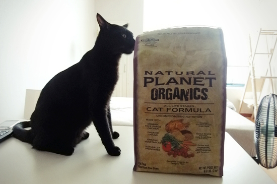
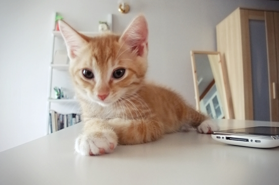

음~ 유기농 스멜~
망고가 자꾸 간장 사료를 뺏어 먹어서 아예 전연령 사료로 바꿨다.
고다 카페에서 사용자들의 추천과 여러 조건들을 고려한 결과 위의 상품으로 결정.
간장은 마치 새로운 맛에 도전하는 걸 즐기는 식신탐험대원처럼
오독오독 잘도 씹어 드시는데, 오히려 망고가 조금 망설이는 눈치다.
역시 사람이나 고양이나 애들 입맛엔 유기농 따위 사치란 말인가.

집사 어른, 저렴한 제 입에는 기름진 예전 사료가 더 맞는 듯하옵니다만...
아아... <(-_-;)>